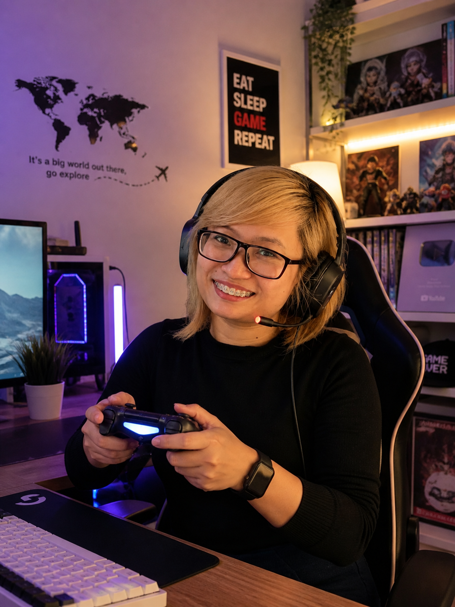
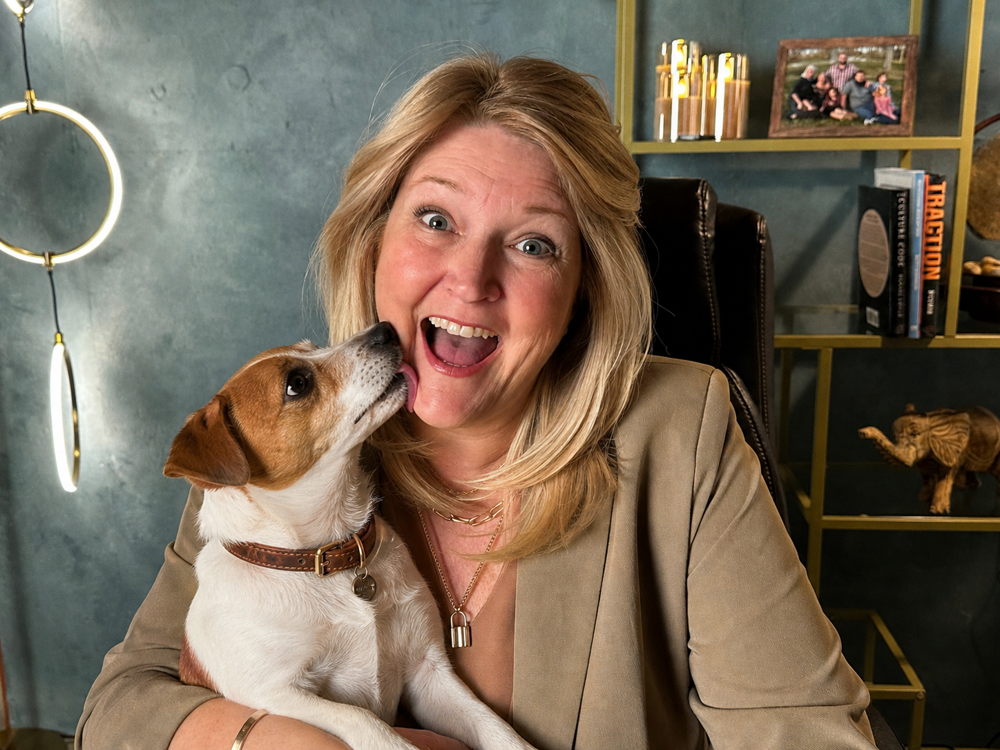

We started xFusion because we hated what staffing agencies do to people.
Six years later, we're about 70 people on three continents who've built real support careers, with clients who actually invest in them.
Our mission
xFusion exists to find great customer support people, place them with businesses that will treat them like real team members, and help those relationships last for years instead of months. We pay a living wage, invest in culture, and manage both sides of the relationship so the work feels like a career, not a gig. That's the whole game.
Why we built xFusion
A short history of how the international staffing model broke, and what we built instead.
In 2020, Jim and David started looking hard at the international staffing industry, and most of what they saw was broken.
Workers got paid so badly they had no reason to stay. Three or six months in, they'd quit for another job that paid a few dollars more. Clients would lose them, hire again, retrain again, and watch the cycle repeat. The whole setup was built on turnover. The agency took a fee every time someone got replaced.
The question Jim and David kept asking each other was simple. What if you actually treated overseas talent like the skilled professionals they are? Pay them well. Give them a real career path. Build a culture they want to stick around for. Manage the relationship the same way a great in-house manager would. Would the math still work for clients?
It did. It worked better.
We started with a few clients, paid our team a real living wage, invested in culture and team-building, and built a screening system backed by our own software (we call it TraitX). It takes thousands of monthly applicants down to fewer than 100 interviews, and the top 1% into placements.
Six years later, we have about 70 team members across the Philippines, Kenya, and the United States. Our clients keep their xFusion team members for years. Our team members build careers, buy homes, and send their kids to school. The numbers tell the story we set out to write.
We're not the cheapest option, and we don't try to be. We're the option that actually keeps the people you place.
The team behind every placement
About 70 people make xFusion run, with offices in the Philippines and Kenya and a smaller team in the United States. We invest in culture the way other companies invest in software: living-wage pay, holiday gifts, branded swag, regular team-building events, birthday and work anniversary celebrations, and account managers who know every team member by name.
The reason is practical. People who feel cared for stay. People who stay get great at the work. People who get great at the work make our clients look brilliant. The whole thing compounds.
The leaders who run the work
The people clients work with day-to-day. Operations, account management, and recruiting. Every account manager knows their team members by name, and every team member knows their account manager has their back.
Hover any photo to meet the person behind the title.


The co-founders
David Tran and Jim Coleman started xFusion in 2020 with one rule: hire people you would be proud to have your customers talk to, treat them like the senior professionals they are, and the rest takes care of itself. Six years later that's still the bar.
David Tran
David studied Computer Science at UC Berkeley, then spent years as a software engineer at Uber and Salesforce. At Uber he worked on internal tools, growth, mobile, dispatch systems, and fraud-prevention systems. At Salesforce he kept building the systems other engineers used every day.
That engineering mindset shows up in how xFusion screens people. Hiring at scale is a systems problem before it's a people problem. David's instinct is to look at the process, find where good candidates are getting lost, and fix the part that's broken.
A first-generation Vietnamese American, David is a newlywed and an avid traveler. He believes great companies are built by people who genuinely care, and that you can tell within about ten minutes of meeting someone whether they actually do.
Jim Coleman
Before xFusion, Jim worked as a detective, then built and sold a few businesses of his own, then ran operations for a private equity fund. The detective work taught him to read people. The businesses taught him how operations either make or break a company. The PE work taught him what happens when you put the right person in the right seat at scale.
The same thing showed up every time: the right people change everything. Screening them carefully, treating them well, and keeping them for the long haul matters more than almost any other choice a business makes.
Jim and his family live in the Denver area, where they raised five children. They were a foster family for many years and are also an adoptive family. Jim's wife and kids are the reason most of the work gets done.
What we stand for
A short list. We try to live by it.
Come talk to us.
If any of this sounds like you, get on a call with our founding team. We'll listen to where support is breaking in your business, tell you honestly whether we can help, and walk you through what working together would actually look like.
30 minutes. No commitment. No credit card. You'll talk directly with our founding team.